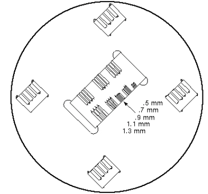

- 00000018WIA303E1030GYZ
- id_131069161.7
- Jul 5, 2019 10:46:04 PM
Slice Thickness and Resolution
Prerequisites
| Required persons | Preliminary requirements | Procedure | Finalization |
|---|---|---|---|
| 1 | Not Applicable | 30 minutes | Not Applicable |
| Item | Quantity | Effectivity | Part number | Manufacturer |
|---|---|---|---|---|
| Axial Slice Analysis Phantom | 1 | - |
46-287379G1 | - |
| Coronal/Sagittal Slice Analysis Phantom | 1 | - |
46 258559G1 | - |
| Phantom Positioner Assembly | 1 | - |
46 258709G1 | - |
|
Note:
Equipment damage possibility. Completely remove the quad head coil from the cradle before performing any body scans. Failure to do so may damage the head coil T/R network. |
| Condition | Reference | Effectivity |
|---|---|---|
|
| - | - |
About this task
Slice thickness and spatial resolution tests check the dimensional characteristics of the scanner. As this is related to the gradients being used, for the TwinSpeed the tests should be repeated for each gradient separately. In This document you will find:
HEAD SCANS
Procedure
- Click on [Scan] (system will Auto Prescan first). Record R1,
R2, TG, and system frequency values on Data Sheet 1.Note:
Remember to position cursor in center of localizer image for prescribing the 3D volume scan. See Figure 2.
Figure 2. CURSOR PLACEMENT FOR PRESCRIBING SLICE THICKNESS 3D SCAN 
Body Scan Procedure
Procedure
SLICE THICKNESS IMAGE ANALYSIS
Procedure
- Select Image Quality, under Utility on the Service Desktop,
see Figure 4
Figure 4. STARTING THE IMAGE QUALITY TOOL FROM THE SERVICE BROWSER 
RESOLUTION IMAGE ANALYSIS
About this task
This test measures the smallest resolvable line groups in a high-contrast resolution phantom. The phantom line pair groups are oriented at a 45° angle (reference to the horizontal plane) in order to measure system resolution in the frequency and phase axes. Resolution images are acquired during the slice thickness scans, so additional scans are not required for this test.
Procedure
- Perform the head resolution check as follows:
- Using Image Browser, select the head slice thick exam.
- Display the 10-mm, I80 image (which should be Series 3, image
1 for head; image 3 for body exam), using [Viewer]. See Illustration
4-1.
Figure 5. Resolution Test Image 
- Select single image icon under [Format] and adjust the Zoom function to obtain an 8.0 magnification. The image can then be panned to better view the resolution block, by holding down the right mouse button while positioning the image.
- After the magnified image is positioned, set the window width to 1 and vary the window level to give the best visible separation between the lines and spaces in the line group being analyzed.
- Record level setting and smallest resolvable line pair group in Data Sheet 3, Resolution Data. For TwinSpeed, identify the GradMode used.
- Repeat Step 1 to perform body resolution check. Use the Body Slice Thick exam, and display the 10-mm, L80 image (should be Series 3, Image 3).
Finalization
No finalization steps.